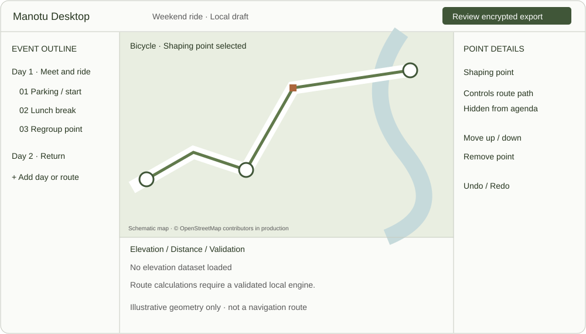

Kenduri & weddings
Separate guest parking from the family entrance; mark the canopy, accessible drop-off and meal window. Share only the details intended for each group.
One day · several arrival points
A temporary map for the people you invite. From kenduri to a weekend ride, everyone gets the same places, stops and plan—without giving Manotu their private itinerary.
Festival is the working feature name. Use Acara / Events as the discoverable navigation label; validate both names with Malaysian participants. Start with private, encrypted file exchange and a single organizer who approves suggestions. Add live collaboration only after a separate privacy and delivery design.
Proceed with a prototype and privacy spike. Do not launch navigation through the existing cached routing path. This report proposes a feature; it does not change the API contract or ship an implementation.
Keep the group conversation. Give it a shared map.
The starting problem comes from the product brief: plans are scattered across WhatsApp, Telegram, Facebook, email and spreadsheets. Festival complements those tools with a structured, portable itinerary. The scenarios below are design hypotheses, not findings from completed user research.
Separate guest parking from the family entrance; mark the canopy, accessible drop-off and meal window. Share only the details intended for each group.
One day · several arrival pointsMeeting point, parking levels, shuttle pickup and registration. No employee directory or attendance tracking by default.
An evening · timed arrivalMeet-up, regroup checkpoints, fuel, water and lunch. Route mode must distinguish bicycle, motorcycle and car.
One route · many stopsDay-by-day legs, accommodation arrival and optional rest or prayer breaks. Overnight stops retain full dates, not ambiguous “tomorrow” labels.
Several days · offline readinessOffer Bahasa Melayu and English, Asia/Kuala_Lumpur time by default, and configurable food, accessibility, surau and rest-stop notes. Dietary labels are organizer-supplied and unverified. Never infer religion, dietary needs or accessibility requirements from a person’s identity.
| Constraint | Design consequence | Evidence status |
|---|---|---|
| Private means group-only too | An unlisted event is not a public contribution. No event tables, encrypted blob store or group roster on Manotu servers. | Repository privacy rule |
| Existing route caching | The API documents a three-hour route cache. Private coordinates and labels must never enter it. | docs/api.md, Routing |
| Backups are personal | Drive appDataFolder is not a collaboration space; Google documents that files there cannot be shared. | Google Drive documentation |
| Invitation is a capability | Anyone holding a group pack and its key can read it. A private group on another platform is not proof of Manotu membership. | Threat-model inference |
The repository already has on-device storage and file backup concepts. Those are useful foundations, but an event pack must be a separate, narrowly scoped format: never export someone’s whole backup to share an event.
Open the invitation. Know where to go next.
The following interactive concept uses fictional content. Its controls demonstrate states locally; they do not share, encrypt or navigate.

11:00–16:00 MYT · Ends today
Saved on this phone · map pack ready
44–48 px controls, scalable type, text labels beside icons, visible focus, and screen-reader stop order. Arrival instructions are readable without opening the map. No color-only status cues.
BM copy: “Acara telah tamat. Salinan di luar Manotu mungkin masih wujud.”
| State | Screen behavior |
|---|---|
| Offline / stale | “Saved revision 3 · latest unknown.” Keep cached plan usable until expiry; never label it current without evidence. |
| Bad key / tampered file | Fail closed with “Could not verify this invitation.” No partial import, secret logging or automatic retry uploads. |
| Changed parking | Show before/after, revision time and “Use updated plan.” Do not switch an active navigation destination without confirmation. |
| Expired / cancelled | Hide event content and clear keys/caches in a conforming client. If actively navigating, offer a safe end or user-confirmed completion of the current leg, then clear it; no new event legs. |
| No app installed | Static installation help with no event preview. Keep the file in the messenger and reopen after installation; do not promise automatic deferred-link recovery. |
Encrypt on the sender’s phone. Decrypt only on invited devices.

Room on Android and GRDB on iOS. Store event, days, stops, revisions and pending suggestions separately from public places. Encrypt the private event payload at rest; wrap keys with Keychain/Keystore. Exclude ephemeral event data from automatic OS and existing app backups by default.
Proposed .manotu-event container: minimal outer format version, crypto suite and ciphertext length. Encrypted body holds random event ID, organizer key, validity window, revision, parent hash, ordered stops and attachment digests. Authenticate header fields. No plaintext title, roster or coordinates.
Use the repository’s libsodium family through maintained platform bindings: authenticated encryption, independent random event keys and Ed25519 signatures over deterministic encoded content. Separate signing keys from encryption keys. Use fresh nonces, versioned canonical encoding, and cross-platform test vectors. Do not design a new cryptographic primitive.

A proposal carries an operation ID, target stop ID and base revision. The organizer compares edits field by field; concurrent edits to the same field require a choice. Only accepted changes enter the next signed full snapshot. Guests reject duplicates and rollback revisions. Two different hashes at the same revision produce a fork warning; never choose by device timestamp. Fresh installs cannot know the latest revision without a trusted comparison.
Recover a lost organizer key only from an explicitly exported, encrypted organizer recovery file. Without it, create a new event and re-invite guests; Manotu cannot reset the key. Co-host publication and key transfer are deferred until a separate authority protocol is reviewed.
| Channel | V1 use | Boundary |
|---|---|---|
| WhatsApp / Telegram | Send the encrypted file and revision files through the system share sheet; return proposals the same way. | Recipients and metadata remain visible to the platform. File-opening behavior needs device testing. No bots or contact upload. |
| Gmail / other email | Attach encrypted pack; open through file association or save to Files. | Email addresses and headers are visible to email services. Use a neutral subject; no claim of transport anonymity. |
| Facebook / Messenger | Use an available file handoff; otherwise share installation guidance and deliver the pack via a supported private channel. | Do not assume attachment or deep-link support in every surface. Never put an unlock secret on a public page. |
| Excel / CSV | Import an allowlisted local stop list; preview rows and resolve coordinates locally. | No entire workbook upload, formulas or macros. Reject unsupported fields; do not import a contact roster. |
| User-owned storage | Explicit encrypted file export is a fallback. Shared cloud hosting is a later option. | Personal backup appDataFolder and iCloud private DB are not group-sharing endpoints. No new OAuth scopes in v1. |
A short URL needs a host for the event payload; v1 has no Manotu event host. A URL fragment is not sent in the HTTP request, but the complete link remains visible to the app receiving it and to page scripts. A future user-hosted pack link needs a separate threat model, generic previews, no third-party scripts, and explicit user-controlled hosting. Never use a Manotu URL shortener for secrets. Source: MDN URI fragments.
Preferred target: on-device routing plus downloaded regional map data. Existing architecture documents server-side Valhalla, so on-device routing is an engineering gap, not an available capability. First prototype can show pins, ordered stops and organizer-provided route geometry; it must not claim automatic offline rerouting.
Alternative requiring deliberate API design: explicitly consented stateless online routing with no route cache, no coordinates in logs, no event IDs or private labels, no tracing payloads and no durable queues. It still sends current coordinates to the routing service and is weaker than the offline model. Audit proxy, infrastructure and upstream behavior before approval. No API changes are made by this report.
Never automatically promote an event stop to POST /places, attach event identifiers to traffic pings, or export a guest’s current location. Map-tile requests can reveal the viewed area: explain online mode and support predownload where licensing permits. External navigation handoff requires consent because it discloses the destination to another provider.

Proposed default: access begins when invited and ends 24 hours after the event’s final scheduled activity. The organizer previews and can adjust the exact expiry. Store UTC instants with an IANA display zone; each stop has full start/end dates. Warn if expiry truncates a multi-day itinerary.
On expiry, compliant apps remove event keys, database payloads, thumbnails and cached attachments. Secure forensic erasure on flash storage and deletion of external files are not guaranteed. Restores must apply expiry before displaying anything. Clock rollback should be detected where possible, but offline time cannot be a trustworthy enforcement boundary on a hostile device.
Removing a guest means excluding their key from future key epochs and re-sharing only with remaining guests. It does not retract old content. A shared bearer invitation cannot revoke one member selectively. Cancellation is a signed update and only reaches people who receive it; offline guests may still see the old plan.
| Risk | Mitigation | Residual gap / gate |
|---|---|---|
| Forwarded invitation | Separate keys; optional per-recipient wrapping; warn before share. | Authorized guests can copy plaintext. No DRM promise. |
| Old parking / route | Signed revisions, visible age, human confirmation of changed destination. | No guaranteed delivery or freshness without connectivity. |
| Identity correlation | New event keys, no global profile, no contacts or read receipts. | Channels, IPs and social context can identify people. |
| Leaked local data | Key wrapping, encrypted event payloads, backup exclusions, scrubbed diagnostics. | Unlocked or compromised device remains a risk. |
| Malicious pack | Size/count limits; no executable HTML; sanitize text; verify before import; bound decompression. | Independent parser fuzzing and cross-platform security review required. |
| Host key lost or stolen | Explicit recovery export; signed handover deferred; restart and re-invite if lost. | No server recovery. Compromised host can publish false changes. |
| Unsafe route / emergency | Respect travel mode; show route limitations and organizer notes as unverified. | No attendance guarantee, rescue tracking or emergency dispatch. |
A single verified “parking has moved” revision could replace repeated screenshots and pins. Measure successful task completion in moderated testing, not by uploading event behavior.
Duplicate a local itinerary for the next ride or family event with a new event ID, new keys and reset dates. Never inherit a previous guest list or access secret.
Prove the privacy boundary first. Then prove that families can use it.
Aim for at least 8 of 10 invited participants to open a pack and identify their first stop without coaching; all should understand that sharing the key grants access and expiry cannot recall copies. Use consented observer notes with invented events and no precise real locations. Revise targets after the first study; do not add production analytics to measure them.
Festival can make a group’s plan easier to follow while keeping it outside Manotu’s servers.
The viable starting point is an encrypted, signed event pack with asynchronous collaboration. It trades seamless live sync and guaranteed delivery for a simple storage boundary. Expiry is a client behavior; anonymity is scoped to Manotu identity; group access depends on how invitations and keys are distributed.
The next decision is navigation: establish a private routing path before presenting Festival as a complete navigation feature. Prototype the sharing journey now, with the limitations visible.
| Record | Fields and rules |
|---|---|
| Event | Random ID, schema version, title, time zone, start/end, access expiry, organizer public key, revision, previous hash, key epoch. All inside encrypted payload. |
| Stop / day | Stable random stop ID, ordered day/leg, kind, label, coordinates, arrival window, dwell time, mode, optional local notes. No guest identity or visited-location history. |
| Proposal | Operation ID, base revision/hash, changed fields, event-only author key and signature. Pending locally until manually shared; organizer accepts or rejects. |
| Attachments | Bounded raster images or route geometry, encrypted with authenticated references. Strip EXIF location metadata unless coordinates are an explicit stop field. No remote auto-loaded content. |
| Suggested limits | Prototype: 14 days, 200 stops, 20 MiB encrypted pack, no videos. Validate on target phones and delivery channels before committing these limits. |
Choose simple bearer access for casual events or recipient-specific invitation handshakes for stronger admission. Neither can stop an authorized participant sharing decrypted content. This choice affects friction and the user promise.
Without a directory or online authority, they cannot prove freshness. Organizer pins the current revision in the chosen group; app shows its revision and signed publication time. A future live design must solve this explicitly.
Benchmark storage, battery, license obligations, route quality and mobile packaging. Existing server Valhalla does not establish a deployable on-device engine. Map download rights must also be verified.
Live location sharing, automatic attendance, platform bots, co-host concurrent publication, transport anonymity, guaranteed cancellation delivery, server event hosting and secret recovery.
Design Report template adapted to HTML: image-first cover, Helvetica Neue hierarchy, split metadata and original section sequence. Illustrations are conceptual. Cover generated with the built-in imagegen tool; vector diagrams authored for this report. Image prompt and provenance are included in the accompanying README.
A Rust-backed app for macOS, Windows and Linux. Create the event, shape its routes, then send a private pack to guests’ phones.
Read the full desktop and route planning specification. This is a design proposal; no desktop implementation or API change is included.

Local library, event setup, dated agendas, parking entrances, accessible drop-off, checkpoints, meals, rest and accommodation. Separate organizer-only notes from guest-visible details. Preview the mobile pack before publication.
Start/finish, ordered stops and shaping points, drag and keyboard editing, undo/redo, travel modes, directional reverse/return/loop, day splits, distances and optional elevation profile. Import and export GPX with explicit privacy controls.
Proposed Tauri 2 shell with Rust domain, encryption, storage and file-processing code; bundled TypeScript UI and MapLibre GL JS map. This is not an all-Rust renderer. Validate graphics, keyboard and screen-reader behavior on each platform before committing to the stack. Tauri prerequisites · MapLibre documentation.
Stops carry agenda details; shaping points control geometry without becoming activities. Reversing a route must recalculate directional restrictions. Missing elevation is unavailable, not zero. Disconnected legs and manual sketches never masquerade as valid navigable roads. Actual local routing and elevation engines remain feasibility gates.
Provide file export on every OS; do not assume a universal desktop share sheet. No account, contact access, live guest tracking or Manotu event hosting. Local drafts autosave in protected storage. Handle Linux systems without a secure key store explicitly; never fall back silently to plaintext keys. OS backup tools remain outside the app’s control.
Use the same signed event format as mobile. Moving organizer authority between devices requires explicit encrypted key transfer and a single active publisher; detect forks instead of promising seamless sync. Private route data must not enter the current three-hour server route cache.
Copy this prompt into Claude with the repository available. It requests design artifacts, not implementation or deployment.
desktop/ src/ bundled UI and map presentation src-tauri/ Rust desktop shell; allowlisted commands crates/event-core/ validation, revisions, pack format and signing boundary crates/route-core/ route model, GPX parser, profiles and provider interface crates/local-store/ encrypted persistence and migrations tests/fixtures/ fictional shared desktop/mobile interoperability vectors